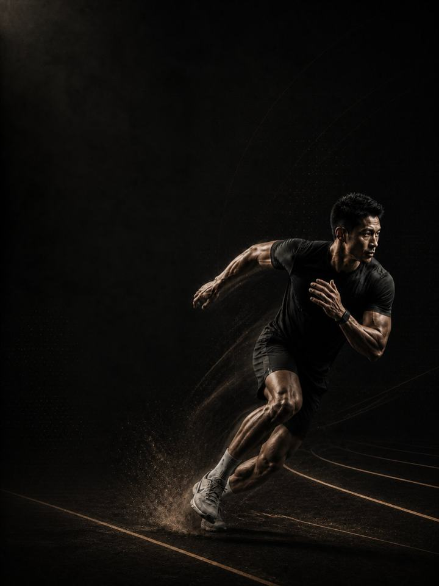

Athletic Development
Build the strength, power and durability of an athlete, without needing a sport to train for.
- Built forathletic without a sport
- Training days3 non-consecutive days a week, or a 2-day short version
- Session length48–60 minutes
- Equipmentfull gym, plus a med ball, sled and box if available
- Formatmobile PDF, every exercise linked to a demo video
- Pair it with any corrective program for 54.990 KD in total (64.980 KD if bought separately).
- Upgrade to 1:1 coaching within 30 days and this price comes off your first month.
The store opens soon. For now, Buy opens an Instagram message and you receive the PDF there.
Who it's for
Most gym programs make you look trained. This one makes you move trained. It is built for people who want to be genuinely athletic, strong, powerful, quick and hard to injure, without a sport, a season or a weekend match to plan around. It also suits anyone coming back to training who wants more than a machine circuit.
You lift, jump, throw, sprint and carry, in the order those qualities are built: strength first, then power, then speed. The four tissues behind most adult injuries, the hamstring, groin, calf and shoulder, are strengthened every week.
Not the right fit if you compete in a sport. Run the AXIS program for your sport family instead. Those are built around a competitive year.
Your week
Three non-consecutive training days. A two-day version is there for busy periods.
| Week | Sun | Mon | Tue | Wed | Thu | Fri | Sat |
|---|---|---|---|---|---|---|---|
| Standard (3 days) | Day 1 Lower & power | Rest | Day 2 Upper & trunk | Rest | Day 3 Speed & agility | Rest | Rest |
| Short (2 days) | Day 1 Lower & power | Rest | Rest | Day 2 Upper & trunk | Rest | Rest | Rest |
The tables are written for the three-day version. With two days, you keep the strength and most of the power, and lose some of the speed work.
Every session runs the same way:
- Warm-up, 8–10 min. Glutes, hips and shoulders switched on before anything fast happens.
- Power and speed, 12–15 min. Jumps, throws and sprints, with full recovery between sets. The set stops the moment quality drops.
- Strength, 20–25 min. The heavy compound lifts, with two to three minutes between sets, because this is where force is built.
- Tissue work, 8–10 min. Nordics, Copenhagens, calves and carries. Last, and never cut.
The order matters. Power and speed come before fatigue, because power trained tired is conditioning with extra risk. Heavy lifts come before assistance. Tissue work goes last because it must never be skipped, and at the end it survives a rushed session instead of being cut from the middle of one.
How the 12 weeks progress
Three phases of four weeks each. Strength runs through all twelve weeks so the load can keep climbing. The jumps, throws and sprints change every four weeks: controlled and on two legs first, then single-leg and lateral, then reactive and fast.
| Weeks 1–4 | Weeks 5–8 | Weeks 9–12 | |
|---|---|---|---|
| Phase | Eccentric and landing | Rate of force | Elastic and speed |
| Goal | Build eccentric strength and landing control | Build rate of force development with fast, forceful lifts | Build reactive strength with short ground contacts |
| Looks like | Two-legged jumps focused on landing. Learn to absorb force before you explode. | Single-leg and lateral jumps. The sled gets lighter and faster. | Shorter contacts, free sprints, and strength holding what it built |
| Working sets a week | 72 | 79 | 84 |
| Landings a week | 64 | 115 | 139 |
| Throws a week | 20 | 50 | 0 |
| Average effort | RPE 7.0 | RPE 7.5 | RPE 7.6 |
The block at a glance
Working sets per week, by what they train. The dashed line is effort.
RPE is effort out of 10. RPE 7 means you stop a set with about three good reps left in the tank.
Deload weeks: weeks 6 and 12 are lighter. You halve the sets, cut the power volume, keep the loads, and retest fresh.
The rules that make it work
- Week 1 is a load-finding week. Your first session on each lift is a search, not a workout. Start light, do the prescribed reps, and ask whether you could have done four more. If yes, add 5 kg for lower body or 2.5 kg for upper body and repeat the set once. That number is your week 1 working weight, and every effort target in the program is read from it.
- Strength stays, power rotates. The barbell lifts run all twelve weeks so the load can climb. The jumps, throws and sprints change every four weeks, because power progresses by type, not by adding sets.
- Power is capped by quality. Jumps, throws and bounds stop the moment height or distance drops, even mid-set. Chasing reps here builds fatigue, not speed.
- Add weight when you earn it. When you hit the top of the rep range on every set, cleanly, twice in a row, add 2.5 kg for upper body or 5 kg for lower body.
- Life comes first. In a heavy week of travel, bad sleep or a big weekend of activity, cut a set or reduce Day 3 to warm-up and tissue work. Missing a session costs nothing. Training through a bad week can cost weeks.
Why the order is fixed
Strength underpins power, and power underpins speed. All three sit on tissue that can tolerate the load. You cannot express power you do not have, so the heaviest lifting starts at the front of the block and never fully leaves. Real power progression moves from two legs to one, from controlled to reactive, and from slow contacts to fast ones, which is what the three phases do.
Why slowing down gets trained
Most non-contact injuries happen while slowing down or landing, not while accelerating. Absorbing force on one leg, off balance and at speed is what separates a durable athlete from a frequently injured one. That is why bounds, step-overs and landings feature throughout, and why Nordics and Copenhagens appear on Day 1 every week, whether or not anything currently hurts.
Terms
- Block: 12 weeks. This program. One block develops one set of qualities to a set standard.
- Phase (mesocycle): 4 weeks. Each one targets one quality. Four weeks is a choice, not a rule. The length follows the goal.
- Training week (microcycle): where effort climbs, sets are added and the deload lands.
- Training year (macrocycle): four blocks in order (Base, Build, Compete, Restore), about 48 weeks.
How you'll measure progress
The PDF includes benchmark tests, among them a hop test, and a score sheet. You record a baseline, then retest fresh in the deload weeks, 6 and 12.
What good progress looks like
- Weeks 1–4: strength climbs and the tissue work starts to bite.
- Weeks 5–8: jumps and hops improve as the power work turns strength into speed.
- Weeks 9–12: sprinting and change of direction feel sharper, and the left-right gap on the hop test closes.
The best result is not the biggest jump. It is twelve weeks completed without a niggle stopping you.
Respect the week
Three hard sessions sit on top of everything else you do. A long hike, a padel game with friends and a week of bad sleep all count. Sudden jumps in total weekly load are the most reliable predictor of injury there is, so count your week honestly. Add 20–30 minutes of easy walking on most days. It is free recovery, not extra training. And protect 7–9 hours of sleep, the most powerful and the cheapest performance tool you have.
The science
Every program in the library is built on published research, and how strong that research is gets stated, not implied. Where the evidence is limited, the page says so.
| Finding | Source | What it does not show |
|---|---|---|
| Strength training cuts sports injuries to under a third of the control rate. Stretching does not reduce them. | Lauersen, Bertelsen & Andersen, British Journal of Sports Medicine 2014. Meta-analysis of 25 randomised controlled trials, 26,610 participants, 3,464 injuries. PMID 24100287 | Risk ratio 0.32 for strength training and 0.96 for stretching. The trials varied a lot, and dose was not standardised. |
| Programs that include the Nordic hamstring exercise roughly halve hamstring injuries. | van Dyk, Behan & Whiteley, British Journal of Sports Medicine 2019. Meta-analysis, 15 studies, 8,459 athletes. PMID 30808663 | Risk ratio 0.49, and 0.55 when the eight high-risk-of-bias studies are removed. It measures programs that include the exercise, not the exercise alone. |
| A single adductor exercise, done three times a week in pre-season and once a week in season, cut reported groin problems by 41%. | Harøy et al., British Journal of Sports Medicine 2019. Cluster-randomised controlled trial, 35 teams, 652 male footballers. PMID 29891614 | Odds ratio 0.59. Self-reported problems in semi-professional men's football only. It has not been repeated in women or in other sports. |
| Every sensible prescription beats not training. Heavier loads rank highest for strength. Multiple sets rank highest for muscle size. | Currier, McLeod, Banfield et al., British Journal of Sports Medicine 2023. Bayesian network meta-analysis, 178 strength and 119 hypertrophy studies, 5,097 and 3,364 participants, about 46% women. PMID 37414459 | The differences between prescriptions were small, and all of them worked. |
What's next
After 12 weeks:
- Play a sport: the Performance series
- Build muscle: the Physique series
- One area needs work: the Corrective series
Want it built around you? One-to-one coaching through the Trainerize app: programming shaped by your goal, schedule and history, video review of your technique, and weekly adjustments. Seats are limited. DM @a_bouzubar with "COACHING".
Before you buy: get cleared first if
- You have chest pain, unusual breathlessness, palpitations or dizziness with exertion.
- You have uncontrolled high blood pressure, a known heart condition, or recent surgery.
- You are pregnant or recently post-partum. Get clearance and a tailored program first.
- You have sharp joint pain in one spot that won't settle. Start with the matching AXIS corrective program.
This program is general fitness guidance. It does not replace a medical assessment.
- Pair it with any corrective program for 54.990 KD in total (64.980 KD if bought separately).
- Upgrade to 1:1 coaching within 30 days and this price comes off your first month.
The store opens soon. For now, Buy opens an Instagram message and you receive the PDF there.